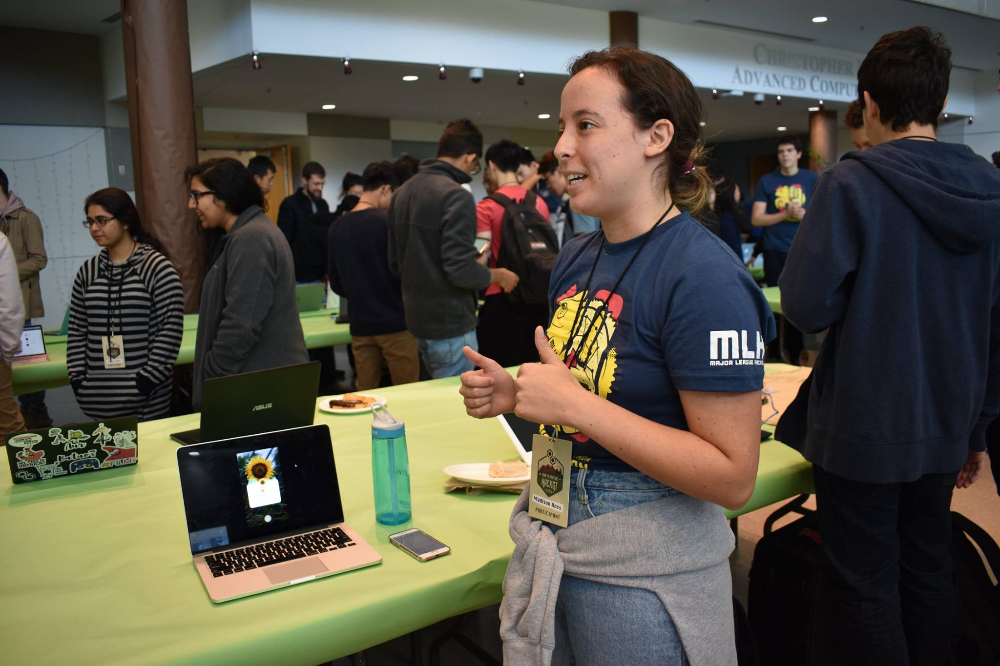
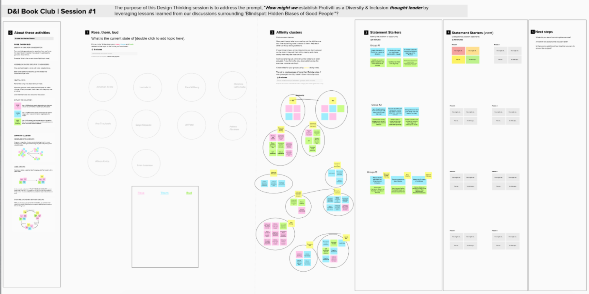
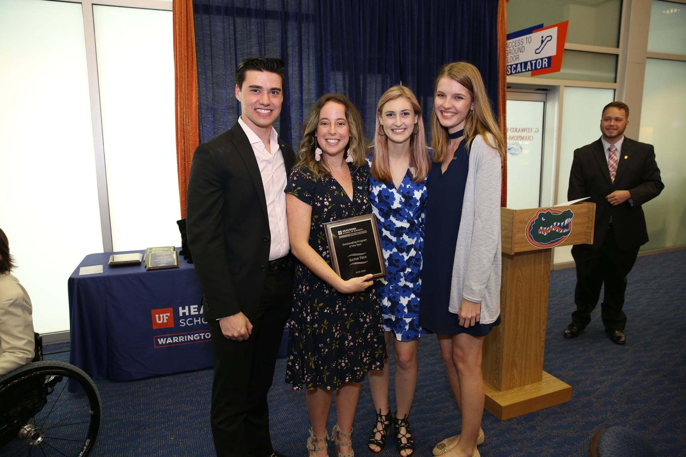

Madison Ross
Technology Consultant blending Advanced Analytics with Human-Centered Design

View my LinkedIn and GitHub for my resume and projects, including this website!
Data Science Experience
I have experience with data cleansing and analysis in Alteryx (Designer Core certified), visualizing data in MS Power BI, building machine learning models in Python (Jupyter Notebooks), and querying databases in SQL.
Southeast Lead for Protiviti's Advanced Analytics Training and Development Program.
Protiviti's Advanced Analytics Development Team is a collaborative effort across a core team of developers, data administrators, and analysts to utilize low-code/no-code advanced analytics and machine learning techniques for the increased efficiency of clients and internal auditors.

I developed workflows displaying use cases of data analytics and machine learning via Alteryx and Power BI, automating standard Payment, Payroll, General Ledger, and ITGCs to increase efficiency of existing business processes by over 200% (projected). Created text mining and optical character recognition (OCR) workflows in Alteryx to process unstandardized invoice data.
As part of this program, I spearheaded an Advanced Analytics training program for consultants in the Southeast region using prescriptive/predictive analytics, increasing efficiency in data visualization via PowerBI, data analysis via Alteryx, and ethical artificial intelligence (AI).
Capturing Insights Through Interactive Dashboards.


I'm responsible for helping businesses manage their technology more effectively and securely while taking a data-driven approach to solving their toughest challenges. I've implemented data protection programs through performing descriptive analytics to evaluate scan results, removable media use, and externally shared files. I utilized this data to create data models and dashboards displaying key findings surrounding sensitive data in the environment.
Through interviewing Data Owners, I helped configure Azure Information Protection (AIP) sensitivity labels around existing business processes to classify and manage the organization’s sensitive data and mitigate risk from disruptive financial, operational, and security-related events. As part of the ongoing monitoring efforts of Azure Information Protection, I implemented a PowerBI dashboard to measure and report AIP health metrics in real-time.
User Experience Design Portfolio
I have experience planning Design Thinking sessions via LUMA recipes and MURAL boards, and prototyping user interfaces using HTML/CSS and Adobe Suite.
I prototyped user interfaces at the Georgia Institute of Technology's hackathon and received 2nd place in User Experience Design.
Hackathons are events where innovators such as
programmers, designers, and project managers collaborate
to prototype new ideas, applications, and unique solutions
from scratch; demoing their work to a team of judges.

Developed and designed the Green Thumb Initiative in Adobe XD, an iOS prototype where users scan their house plant via augmented reality to view a brief plant history, optimal growth conditions, and measure plant health with bluetooth-connected sensors. See the Green Thumb Initiative on Github.
Lead User Experience Designer for PorchLights
Neighborhood projects don’t need to be hard. PorchLights is a startup that shines a light for residents on the process of effectively building local neighborhood improvements.
Lead User Experience Designer collaborating directly with the CEO/Founder to develop user personas, information architecture, wireframes, web app user interfaces, color scheme, logo creation, and design assistance in Figma for a whimsical and sleek end-to-end user experience.
I am a Design Thinking Advocate.
I have facilitated 30+ hours of Design Thinking Learning Lab sessions, a virtual learning experience training up to 100 individuals per session on Design Thinking basics. I coach small groups to foster skill development in remote Design Thinking through activities and storytelling.
I captured insights from 300+ participants via two design thinking sessions to drive global D&I strategy. Utilized LUMA recipes and MURAL boards to complete design thinking activities and address the prompt, "How might we establish Protiviti as a D&I Thought Leader?"

Pain points are specific problems that your people are experiencing
as it relates to your prompt. These are challenges that, if solved,
will provide the most value to your organization.
Utilize feedback and identify recurring themes to uncover pain points
and potential root causes. Do not be afraid to spend more time than
you had planned on this step. This is a key insight that will be essential
to the remainder of the Design Thinking session!
Discover more of my key takeways on Rethinking D&I and Enabling your People through the Power of Design Thinking!
My Commitment to Diversity and Inclusion (D&I)
My mission is to cultivate an inclusive workplace culture by widening individual perspectives and establishing a support system to empower more minorities to pursue careers and leadership roles in technology.
Co-Director of Protiviti's global Diversity and Inclusion (D&I) Book Club, which strives to fosters an inclusive environment in which employees and allies can collaboratively share their experiences while widening perspectives on D&I topics.

Prepared bi-weekly discussion questions and activities on one book per quarter to spark courageous conversation for 35+ offices. Additionally, developed a Summer Series consisting of three sessions to discuss D&I topics with bite-sized media such as TED Talks, articles, and podcasts.
Published Media
- See how we developed the D&I Book Club, The "Why" and "How" of D&I in the Workplace
- Discover my seven key takeways on how to rethink D&I and enable your people through the power of Design Thinking
- Read this externally published article on curating our Summer Series: Fighting for Equality
Co-Host of The Cheddar, a podcast series of 1K listens dedicated to empowering minorities in technology and business.
I created 15 podcast episodes to recognize and empower women in various industries, with a focus on the technology industry, to bring awareness to workplace biases and strategies for a successful career. Listeners can gain insight from conducted interviews, the hosts' personal experiences, and researched topics related to women's rights and workplace culture.
Listen to The Cheddar Podcast, Empowering 1K Women in Tech.
Recommended Episodes
I hosted a Diversity Event for 50 students at the University of Florida.

GatorTech's Diversity Event, "Hacking Tech's Diversity Problem" Won Outstanding Program of the Year, distributed by the Warrington College of Business at the University of Florida in 2019.

I directed the first technology-focused diversity event to promote a diverse workplace culture and provide opportunities for 40 students entering the technology field. Organized an internship panel, the University of Florida's Chief Diversity Officer as a guest speaker, and database distribution of internship and full-time positions looking for diverse candidates.